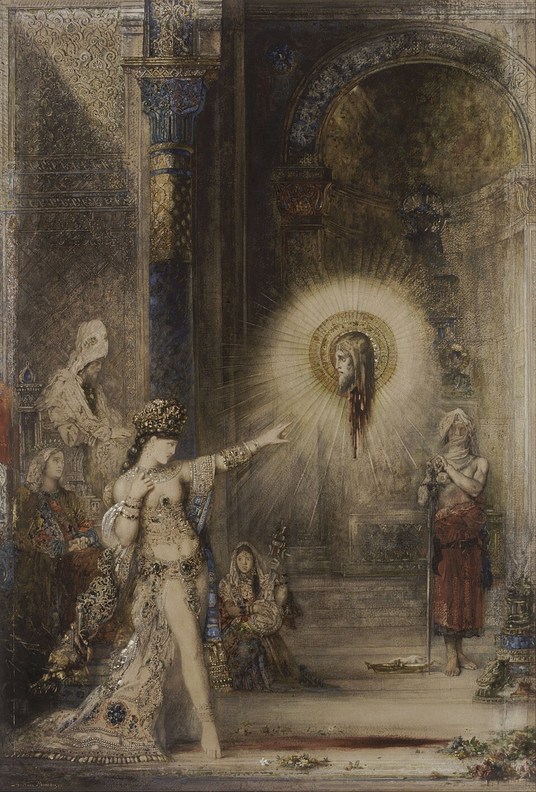
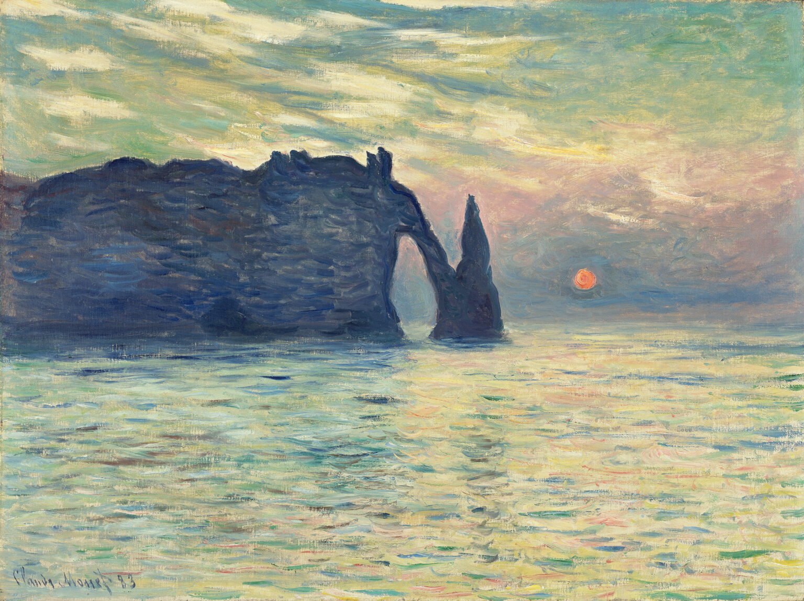
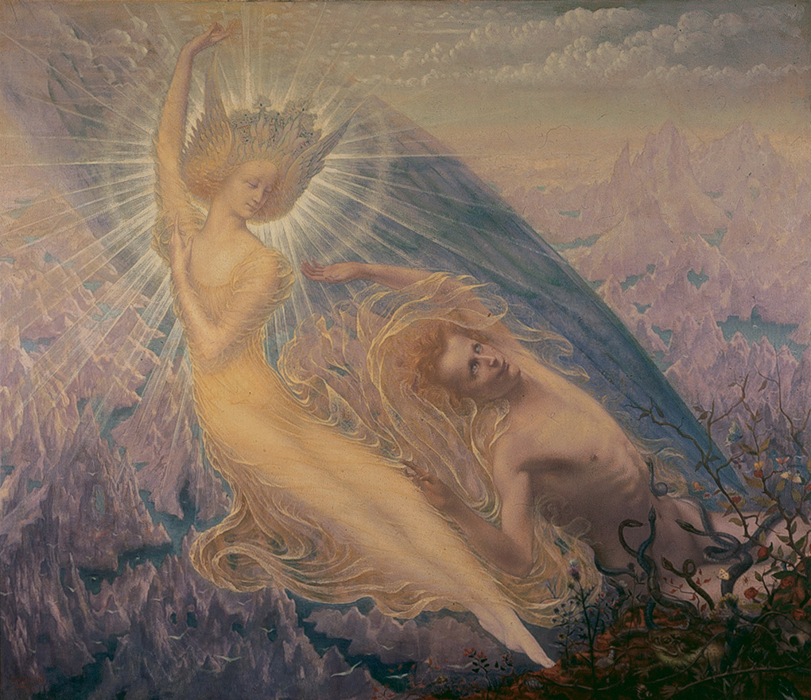
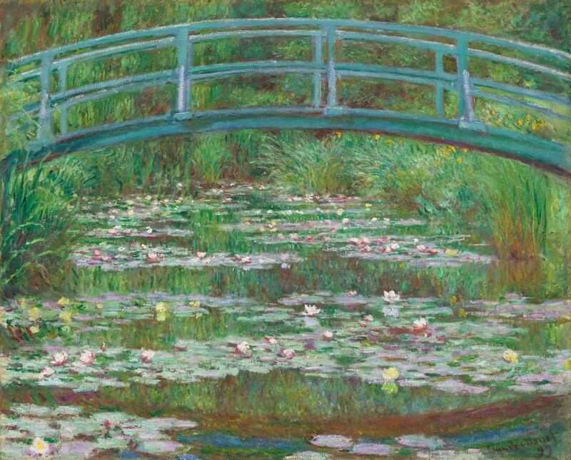

A VISUAL STUDY / OCTOBER 2026
Silicon &
the sublime.
A Symbolist’s study, lit by an Impressionist sunset, running on a Sun workstation. Gilded, melancholy, tactile. Beautiful enough to linger in; precise enough to think in. The tension between a human soul and a deterministic machine.

Your atmosphere reference / Musée d’Orsay ↗
Beauty with something
unsettling underneath.
Wilde’s decadent beauty. Dostoevsky’s moral struggle. Kierkegaard’s spiritual anxiety. Ornamental detail, luminous figures, dark recesses, old gold. A room that seems to contain a secret.

Your light and color reference / NCMA ↗
The world
through paint.
Violet haze, sea green, an ember of sunlight. Edges dissolve; the hand remains visible. Let the paintings hold the atmosphere.
A life of
questions.
Camus and Sartre: estrangement, freedom, the absurd. Kant, Aristotle, Plato: the need to reason. Dante and Homer: fate, judgment, the sublime.
BOOKCLOTH / PENGUIN BLACK / AGED IVORY / TEAL / GOLD LETTERING
A type and
material study drawn from your bookshelf photograph.
“All art is quite useless.”
OSCAR WILDETHE PICTURE OF DORIAN GRAY, PREFACE

Painted light, spiritual tension, violet and gold ↗

The Monet you liked / National Gallery of Art ↗
TYPE / THE HUMAN VOICE
Reddy.
Literary title-page scale. Precise technical marginalia.
~/the-examined-life
CODE / LITERATURE / MATTER / SPIRIT
SUN / NeXT / CDE
DENSE CHROME · HARD EDGES · ONE-BIT TEXTURE
The machine
as a frame.
Rust and GPUI supply the rigor: precise spacing, compact controls, visible structure. Dithering belongs in the chrome, shadows, and transitions. Give the paintings scale and their original color. Let the tension do the work.